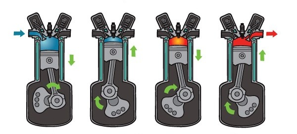
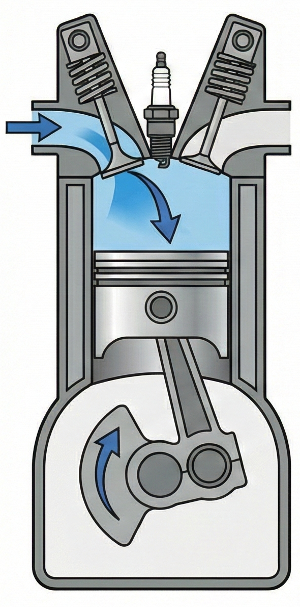
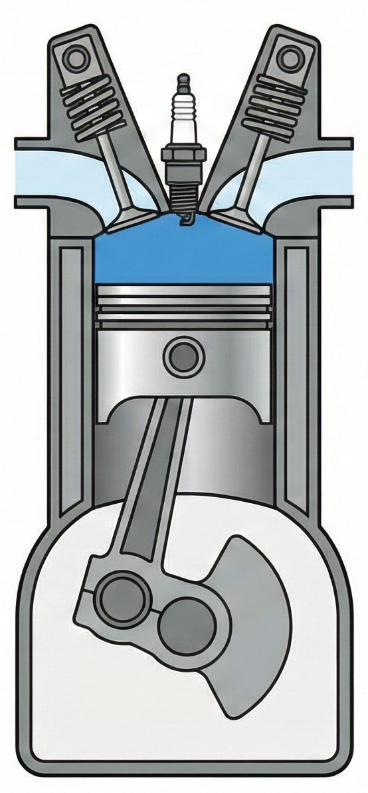
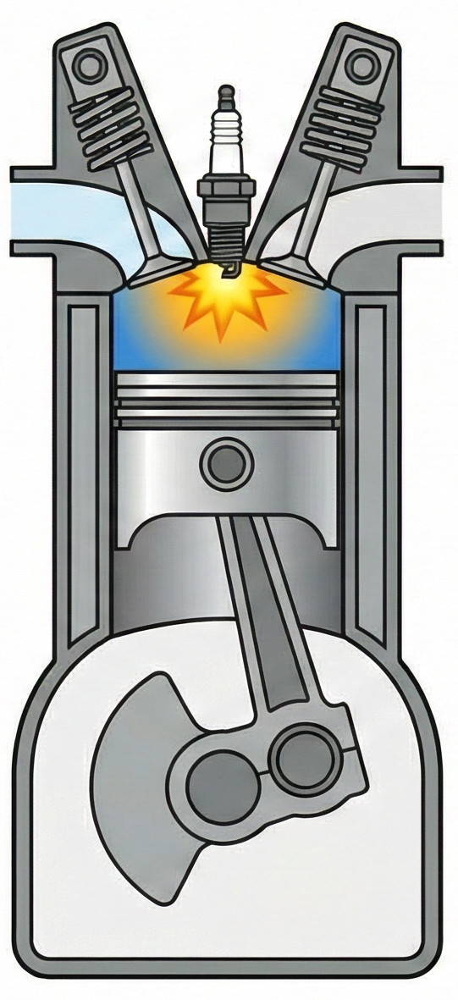
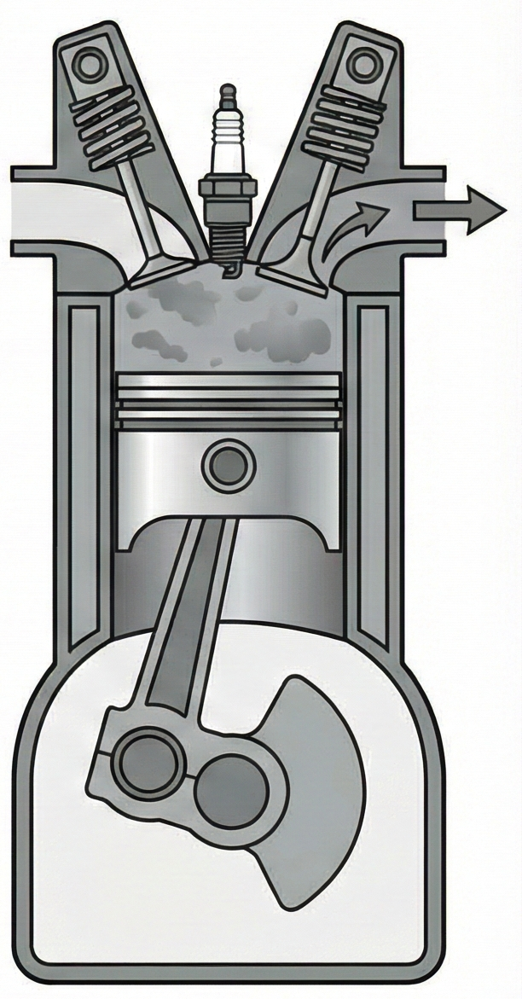

Otto çevrimi, yakıtın yanmasıyla oluşan yüksek basıncın pistonları aşağı-yukarı hareket ettirerek bu doğrusal enerjiyi döner torka dönüştürdüğü bir motor türüdür.
Bu sistemde amaç; yakıtın yanmasıyla oluşan yüksek basıncın pistonları aşağı-yukarı hareket ettirmesini sağlamak ve bu doğrusal enerjiyi (piston hareketi), krank mili aracılığıyla döner torka (tekerlek hareketi) dönüştürmektir.
Benzinli motorlar, kıvılcım ile ateşleme (Spark Ignition) yapan içten yanmalı motorlardır. Yakıt ve hava karışımı silindir içine alınır, piston tarafından sıkıştırılır ve tepe noktasında buji tarafından ateşlenir. İdeal Otto çevriminde yanma, "sabit hacimde" gerçekleşen bir süreç olarak modellenir.
Dizel motorlar, yüksek basınç ile sıkıştırma (Compression Ignition) prensibiyle çalışır. Bu motorlarda buji yoktur. Silindire sadece hava alınır ve çok yüksek oranda sıkıştırılır. Sıkışan havanın sıcaklığı o kadar artar ki, üzerine püskürtülen yakıt (mazot) kendi kendine patlar.
| Özellik | Benzinli (Otto) | Dizel |
|---|---|---|
| Ateşleme | Buji Kıvılcımı ile | Sıkışan havanın ısısıyla |
| Emilen Madde | Hava + Yakıt | Sadece Hava |
| Sıkıştırma Oranı | Düşük (8:1 - 12:1) | Yüksek (14:1 - 25:1) |
Günümüz araçlarının çoğu 4 zamanlı prensibe göre çalışır. Aşağıdaki başlıklara tıklayarak detayları okuyabilirsiniz:
Piston aşağı inerken (Üst Ölü Noktadan Alt Ölü Noktaya) silindir içinde vakum oluşur. Emme supabı açıktır. Benzinli motorlarda hava-yakıt karışımı, dizel motorlarda ise sadece hava silindir içine emilir.
Emme ve egzoz supapları kapanır. Piston yukarı çıkarak içerideki karışımı veya havayı sıkıştırır. Bu işlem sırasında basınç ve sıcaklık hızla artar. Bu süreç termodinamikte "adyabatik" (ısı alışverişsiz) olarak modellenir.
Motorun güç ürettiği tek zamandır. Piston tepe noktadayken; benzinli motorda buji çakar, dizel motorda yakıt püskürtülür. Oluşan patlama ile piston büyük bir kuvvetle aşağı itilir. Kimyasal enerji hareket enerjisine dönüşür.
Genleşme bittikten sonra piston tekrar yukarı çıkar. Egzoz supabı açılır ve yanmış atık gazlar pistonun itme kuvvetiyle egzoz manifoldundan dışarı atılır. Döngü tamamlanır.
